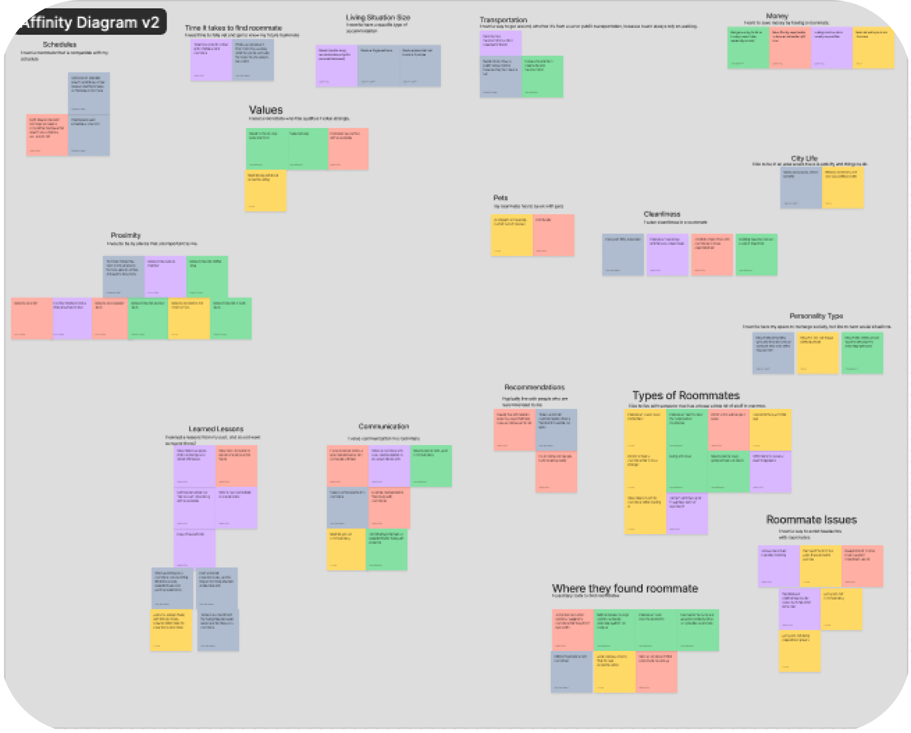
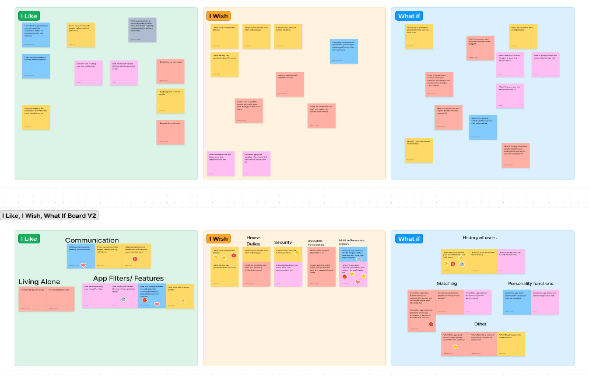
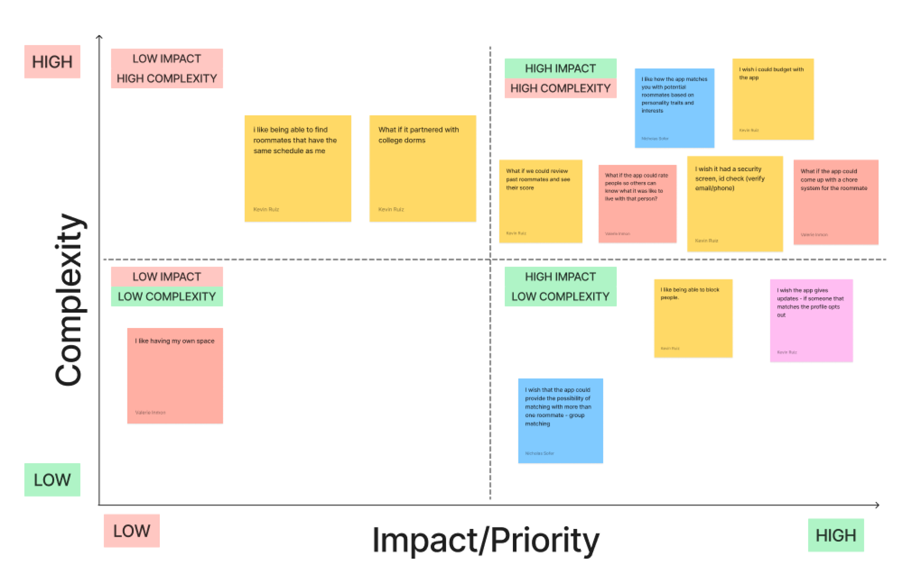
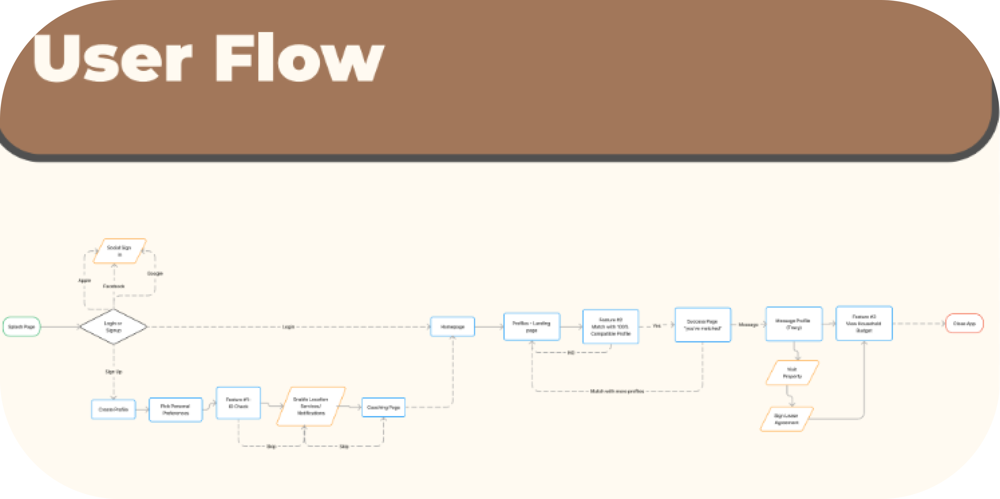
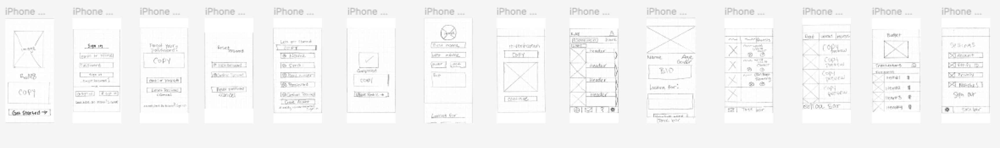
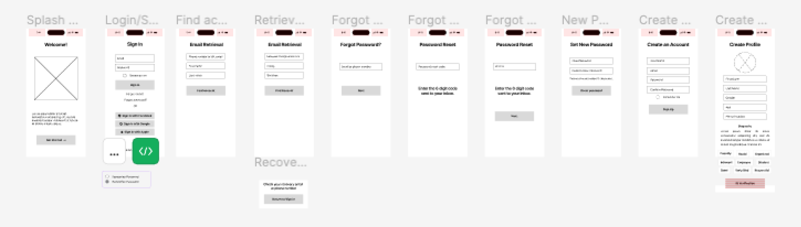
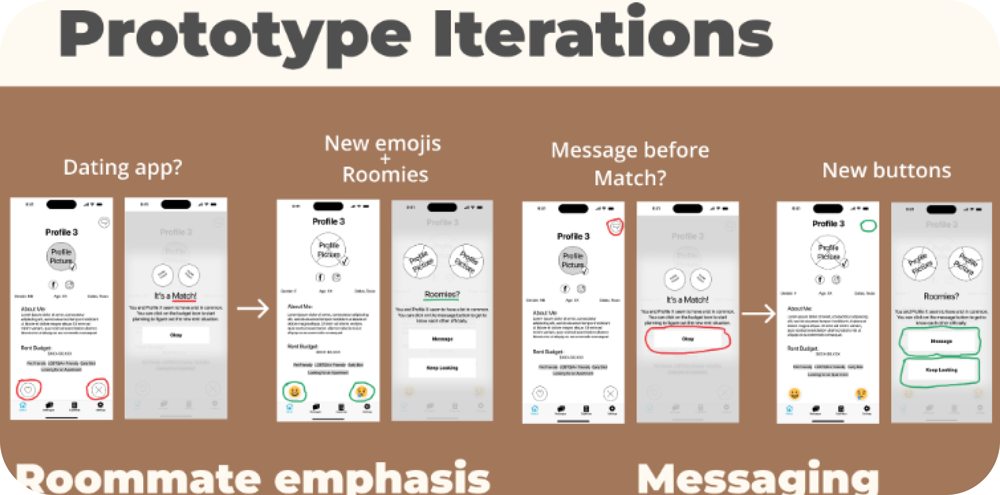

Designing an app that offers a range of features in a single, user-friendly platform so that users will stay on track with their previous search methods, resulting in lost opportunities.
User interviews were conducted to learn about their experience finding roommates in the past and how they felt after sharing a space with them. We sent surveys to discuss forums, friends, and classmates about the accommodations and roommate compatibility. To know and understand what the other apps offered, we researched compatible websites to understand what they offered and what opportunities we have to go above and beyond. we developed a User Persona with possible opportunities and pain points.
Affinity

Once the information was gathered from the Research, we developed the User insight. The User insight provided a valuable understanding of the target audience's needs and preferences, allowing us to tailor our product to meet their expectations better. As a result, we created a more user-friendly and appealing product that resonated with our target audience. This ultimately led to increased customer satisfaction and loyalty and improved sales and market share.
Followed by the affinity map and the Ideation. We group the feedback to what the users mostly want and what they would like to see. We mapped the user and site flow, which will help with easy navigation. We drew out the User journey map to map the process, followed by another affinity diagram and Feature Prioritization.
We followed the affinity map and the ideation. We grouped the feedback to reflect the users' preferences and desires. We mapped the user flow and the site flow to facilitate easy navigation. We created a user journey map to outline the process, followed by another affinity diagram and feature prioritization.
Ideation

2x2 Matrix

Keeping the site and user flow in place, we sketched out the wireframes. To ensure the smooth functioning of the website and the ease of navigation for users, we created initial sketches of wireframes, transformed them into a digital format, conducted tests to ensure proper functionality, made any required adjustments, incorporated user interface elements, and developed a high-fidelity clickable prototype of the application. We then proceeded with further testing and made any necessary adjustments to the prototype.

Keeping the site and user flow in place, we sketched out the wireframes.

Keeping the site and user flow in place, we sketched out the wireframes. To ensure the smooth functioning of the website and the ease of navigation for users, we created initial sketches of wireframes, transformed them into a digital format, conducted tests to ensure proper functionality, made any required adjustments, incorporated user interface elements, and developed a high-fidelity clickable prototype of the application. We then proceeded with further testing and made any necessary adjustments to the prototype.

Keeping the site and user flow in place, we sketched out the wireframes. To ensure the smooth functioning of the website and the ease of navigation for users, we created initial sketches of wireframes, transformed them into a digital format, conducted tests to ensure proper functionality, made any required adjustments, incorporated user interface elements, and developed a high-fidelity clickable prototype of the application.
We then proceeded with further testing and made any necessary adjustments to the prototype.

We conducted seven total user tests. All of the participants were 18 and older. We had them run through three tasks. Our first task aimed to identify how long it takes them to create and verify their account. The goal of our second task was to assess how users were able to determine that their matches were compatible based on the profile they built. Our final task aimed to determine how seamless the process was for a user to check and add items to their budget.
Enhance visibility of compatibility with other users. Add profile sections to emphasize housing preferences. Enhance visibility and features of confirmed roommates. We want to make it easier for our users to find compatible roommates and housing options. Users can highlight what they are looking for in a living situation by adding profile sections specifically for housing preferences. This will help match users with similar preferences and increase the likelihood of finding a compatible roommate.

Please fill out the form to contact me!
Let's Connect & Collaborate on Design!
Aruna Andrew
©: Copyright 2023